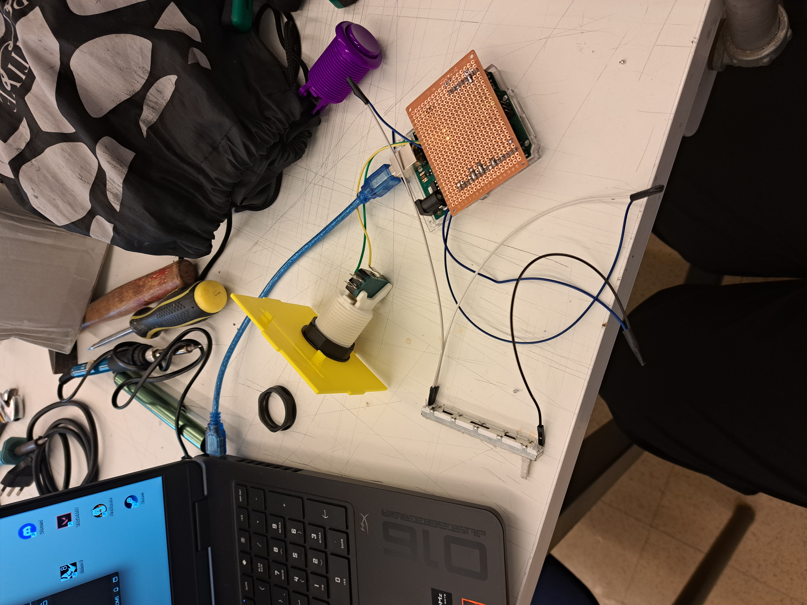
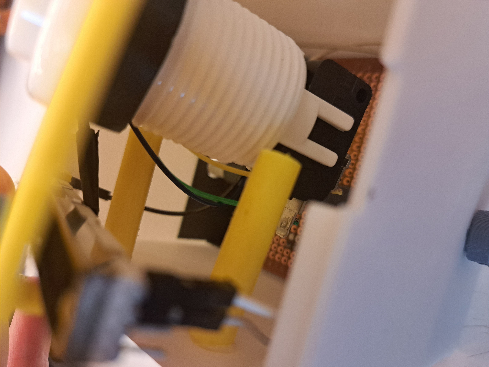

Unidad 2: Diseño de Interfaces Físicas | Universidad Adolfo Ibáñez (UAI)
Haz clic en el siguiente botón para iniciar el simulador web interactivo conectado a tu controlador físico por Web Serial API.
🚀 ABRIR JUEGO (DASHBOARD)Evidencias de la soldadura en placa preperforada (shield modular) y la robustez.

🔧 Proceso de soldadura en placa preperforada (Shield modular sin protoboard).
📦 Integración robusta y orden del cableado interior de la caja.